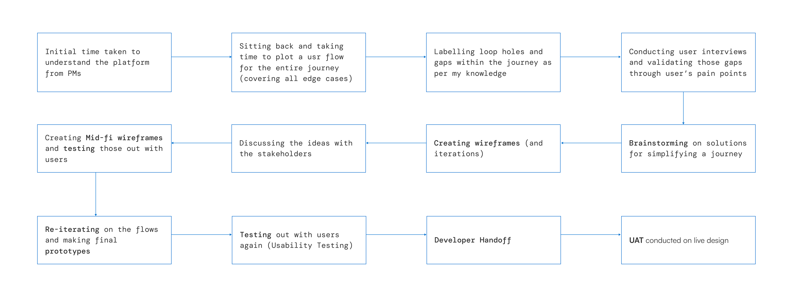
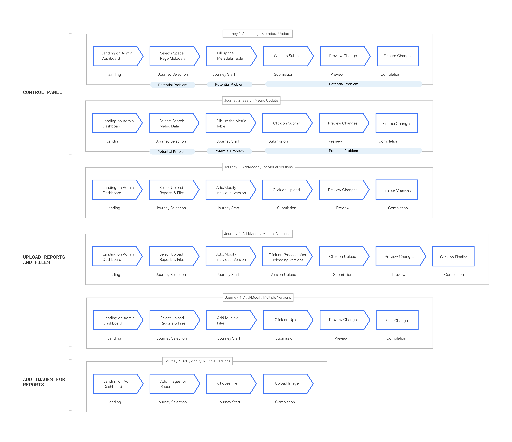
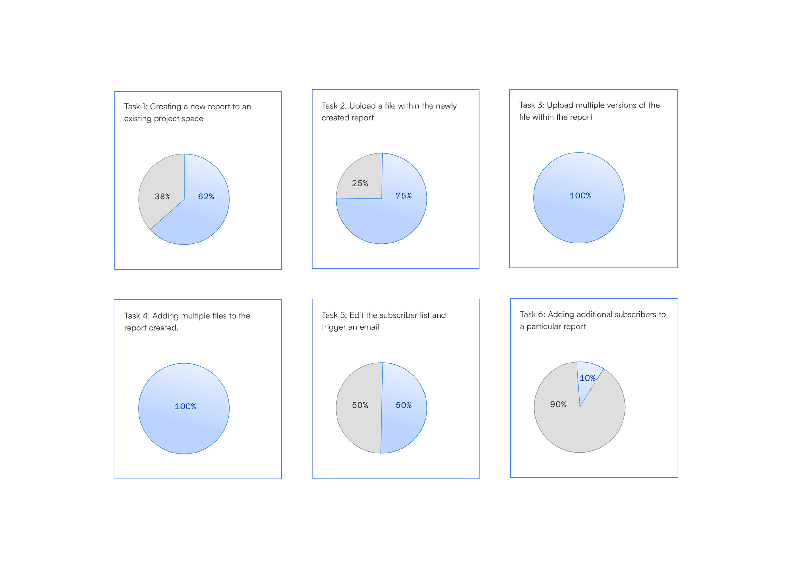
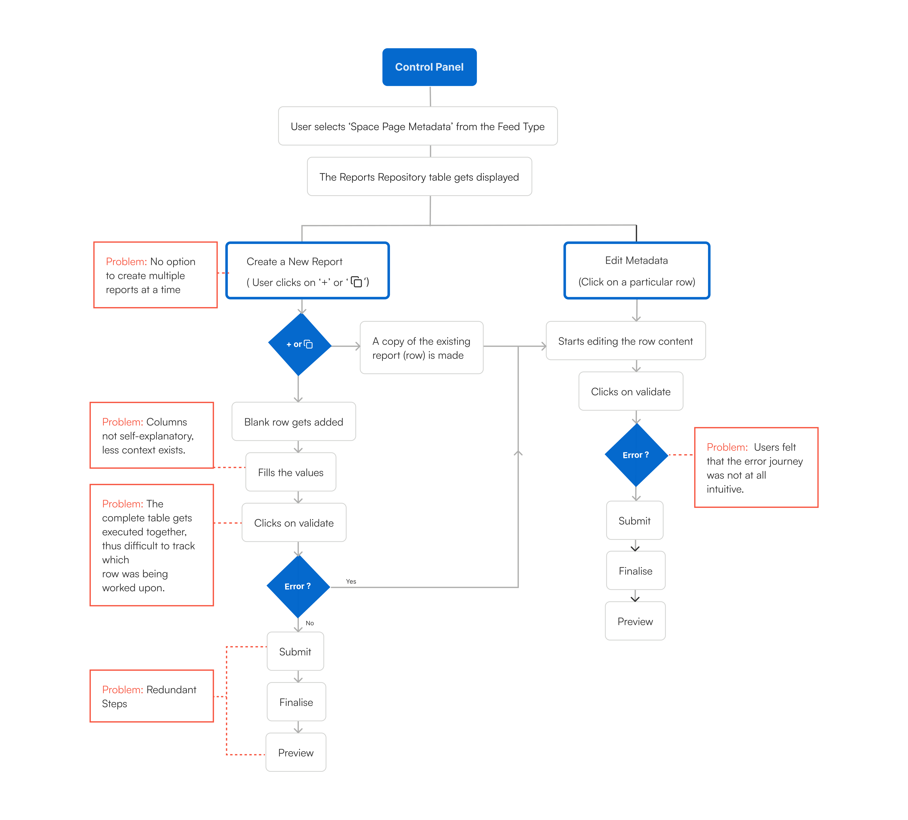
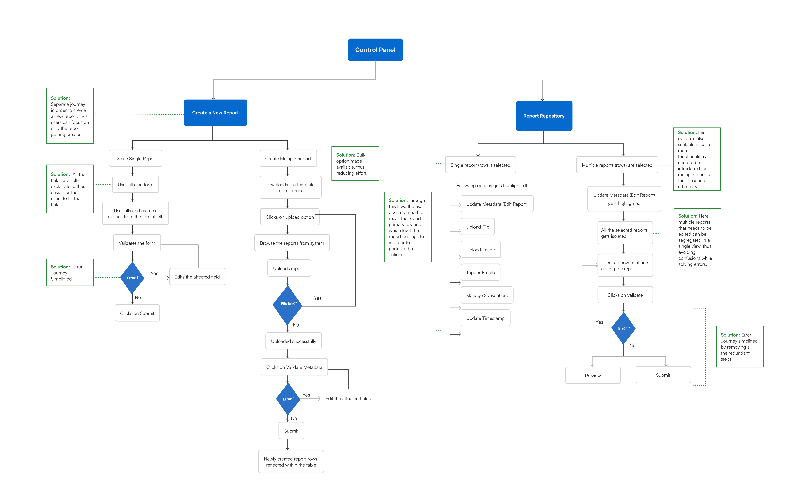
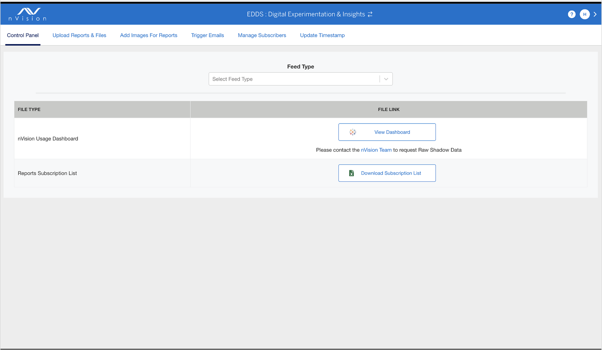
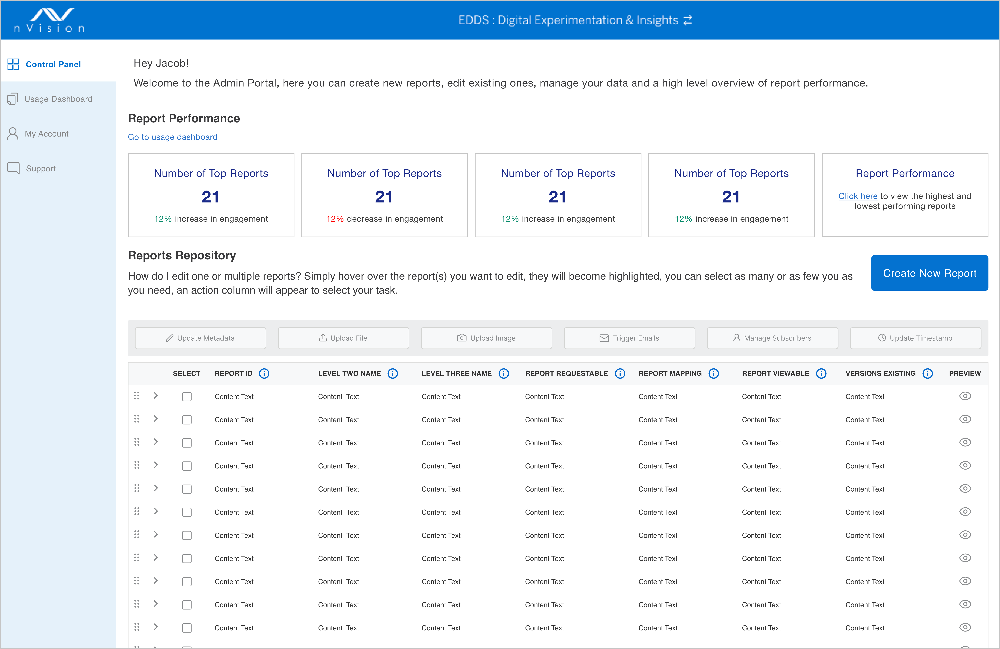

American Express
Redesigning AMEX Enterprise Tool
End-to-end redesign of nVision—American Express's internal BI workspace—focused on the Admin Panel where teams govern metadata, publish reports, and keep enterprise reporting consistent.
Overview
nVision is an in-house one stop shop enabling consumption of business performance reports across domains of AMEX. It consolidates reporting across multiple BI tools and provides a single-interface unified report distribution and alerting platform. nVision Admin Panel is like the control centre. This is where admins and report producers manage all the data, ensuring everything runs smoothly. This redesign focused on reducing friction in those admin workflows—navigation, metadata management, report creation, and dashboard maintenance—so teams spend less time fighting the tool and more time delivering trustworthy reporting.
Why Redesign
The legacy nVision Admin experience made everyday tasks harder than they needed to be: cumbersome navigation, excessive clicks, overwhelming information, non-intuitive design, and wasted man-hours when admins and producers tried to update metadata, publish reports, or manage dashboards.
How might we streamline workflows like updating metadata, creating reports, and managing dashboards to minimise the time product owners spend guiding nVision users?
Users
The platform was used by two primary roles: Admins and Report Uploaders. Admins were responsible for creating, editing, and maintaining reports. Report Uploaders, on the other hand, uploaded reports related to their respective Business Units to the dashboard, adhering to the metadata specifications defined by the Admins.
Admins
Create, edit, and maintain reports — and define the metadata specifications that uploaders must follow.
Report Uploaders
Upload reports for their respective Business Units to the dashboard, adhering to the metadata defined by Admins.
My Approach
I started by aligning with PMs on how nVision worked today, then mapped the full journey—including edge cases—before validating gaps with research. From there I iterated through wireframes, stakeholder reviews, mid-fi testing, and final prototypes.
- Discovery
- Mapping
- Validation
- Iteration
- Wireframes
- Stakeholder Reviews
- Testing
- Final Prototypes

Existing Platform & Journeys
Major journeys were broken down into superficial flows, then detailed further into the Control Panel, Upload Reports / Files, and Add Images workflows to surface where users were getting stuck.

Research
I then interviewed 32 users to understand their workflows and identify which journeys were the most problematic and why. Findings were mapped across six key tasks, comparing frustration versus ease for each.

User Flows
Legacy Flow

Pain points were highlighted across the legacy flow: bulk creation challenges, unclear columns, table execution problems, redundant steps, and a confusing error journey.
Redesigned Flow

Solutions were annotated in green: separated create paths, simplified error handling, clearer fields, bulk options, and a scalable repository selection.
Final Design
Original Dashboard

The original dashboard was fragmented, with tab-based navigation lacking hierarchy. Users had to hunt for status and actions.
Redesigned Dashboard

- Key metrics displayed upfront.
- Report modification options activate upon row selection.
- New isolated journey for creating reports.
Update Metadata Journey
- Users have a better overview of the complete dashboard.
- Admins can have a look at the major key insights of the report performance at a glance.
- The error journey is more intuitive now. Inline error editing functionality was well received.
- The approach of selecting reports and then performing actions is a new approach taken.
- The approach of straightaway validating and finalising the report felt better than the confusing approach before.
Create New Report
- The user can browse and select multiple reports in order to upload within the space page dashboard.
- The errors get displayed in case there are any problems while uploading the reports on the dashboard.
- The user can now edit the cells within the table in case of any errors (red) or warnings (yellow).
- This allows the user to create reports in bulk at a time.
Impact
- The redesign of the nVision Admin Panel significantly improved workflow efficiency, reducing the dependency on Product Owners for routine queries.
- By streamlining report uploads and administrative tasks, the new system enhanced self-sufficiency, allowing users to complete their work with minimal friction.
- This transformation had a measurable impact on American Express, cutting man-hours by 75%, leading to substantial operational cost savings.
- The reduction in redundant back-and-forth communication freed up valuable time for admins, report uploaders, and Product Owners, enabling them to focus on higher-value tasks.
- This efficiency boost not only accelerated decision-making but also enhanced overall productivity across teams, reinforcing the company's commitment to seamless internal operations and digital transformation.